Cosmo Instruments India Pvt. Ltd.
From a single liaison office in Gurugram to a pan-India precision instruments powerhouse — a journey spanning over two decades.
Our Journey
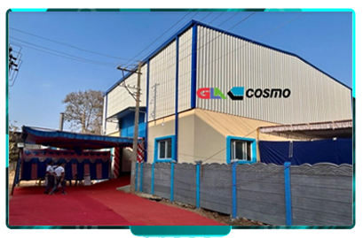
Bengaluru JVLaunched a joint venture for machine manufacturing in Jigani Industrial Area, Bengaluru — continuing expansion into India's most critical precision-manufacturing hub.
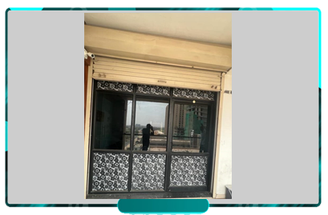
Becharaji OfficeOpened a sales and service office in Becharaji, Gujarat — followed by a joint venture for machine manufacturing in both Becharaji and Ahmedabad.
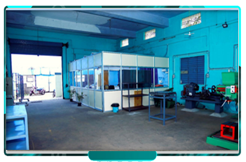
Chennai FacilityEstablished a dedicated leak testing machine manufacturing facility at Ambattur, Chennai — bolstering South India operations significantly.
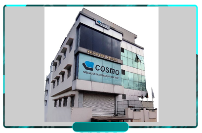
New R&D HubBengaluru R&D Centre relocated once again to a newer, larger facility further strengthening machine design and manufacturing capabilities.
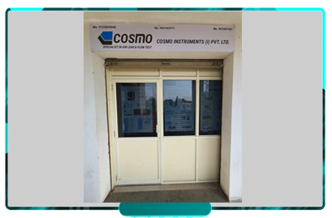
Gujarat EntryEstablished a domestic sales and service office in Ahmedabad, Gujarat to address the growing demand for Leak Testing solutions in the region.
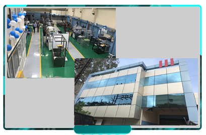
Pune Mfg UnitPune office expanded with a new machine manufacturing unit for complete leak testing machine solutions with end-to-end delivery capability.
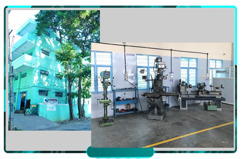
R&D ExpansionExpanded Bengaluru R&D Centre with advanced Leak Test Machine design & manufacturing facilities relocated to a new, larger premises.
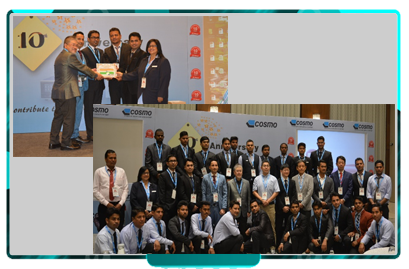
10th AnniversaryCelebrated the 10th Year Anniversary of Cosmo Instruments India Pvt. Ltd. — a decade of precision, quality, and customer commitment.
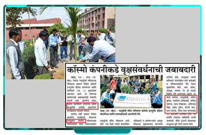
CSR InitiativePlantation programme at Manesar Govt. Polytechnic (Delhi) and Gadudevi Hills, Supewadi (Pune) — led by President Mr. Tomoyuki Furuse San.
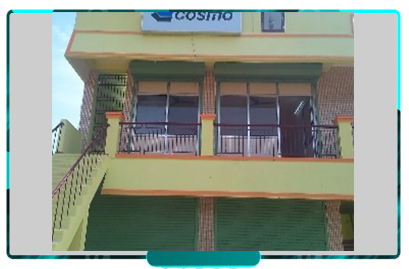
South IndiaEstablished a sales and service office in Chennai, extending Cosmo's reach into South India with dedicated technical support.
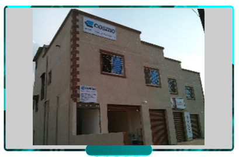
West ExpansionEstablished a dedicated sales and service office in Pune to ensure timely on-site support for western region customers.
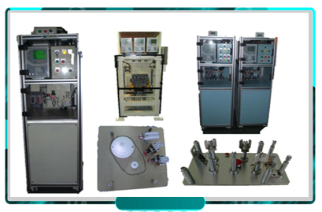
ManufacturingCommenced manufacturing of Leak Testing Machines in the Bengaluru region — a pivotal step toward becoming a full-stack solutions provider.
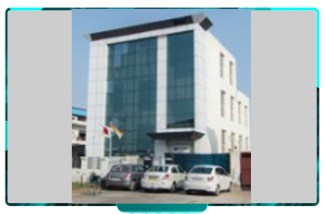
HQ UpgradeHeadquarters were expanded with additional manpower and a dedicated dust-proof calibration lab to support customers with faster, more precise service.
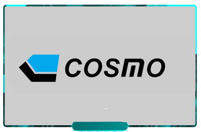
Rapid ExpansionA landmark year — the company exceeded 300 clients, achieved INR 13 Million annual turnover, and opened Sales & Service offices in both Bengaluru and Pune regions.
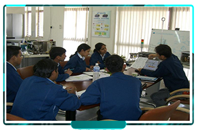
Team BuildingCosmo India built a team of highly qualified sales and service engineers who completed intensive training in Japan, Malaysia & Thailand.
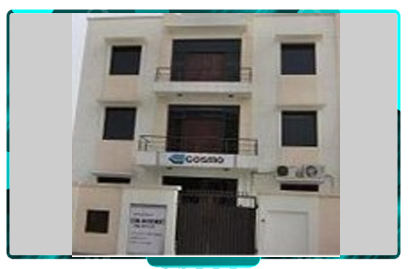
IncorporationIn December 2009, the Liaison Office was officially localized as Cosmo Instruments India Pvt. Ltd. at IMT Manesar, Gurugram.
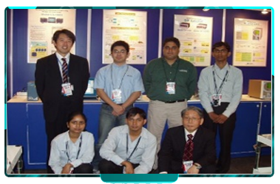
Auto ExpoParticipated in India Auto Show 2008 at Pragati Maidan, Delhi — marking Cosmo's first major public presence at a premier Indian automotive exhibition.
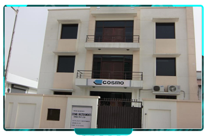
Liaison OfficeCosmo established its Liaison Office in October 2007, training engineers on Air Leak Testing from a single-room office in Sushant Lok, Sector 55, Gurugram.
Based on customer feedback, Cosmo took the strategic decision to establish its own company in India to deliver better nationwide service.
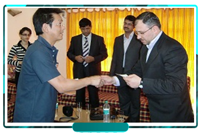
Japan ConnectTechnical advisors from Cosmo Japan began visiting India regularly for on-ground service support and direct customer feedback collection.
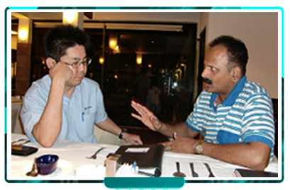
FoundationIn the late 90s, Cosmo appointed an authorized agent in India for timely service and technical support to its growing Indian user base.